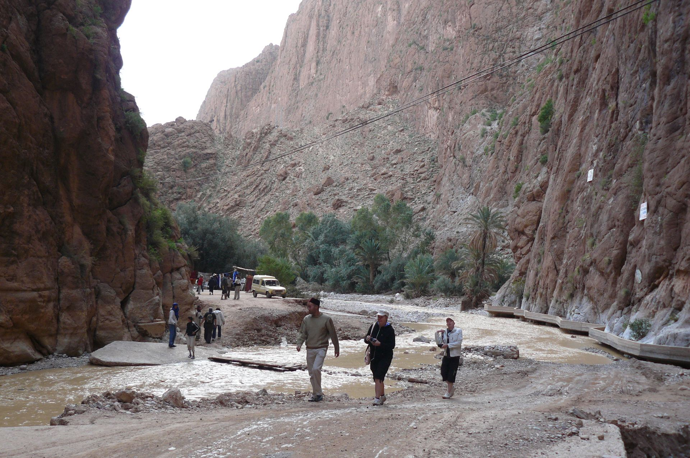
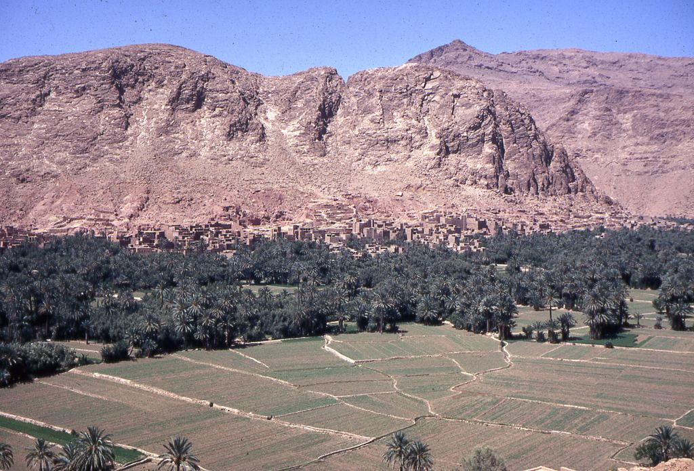
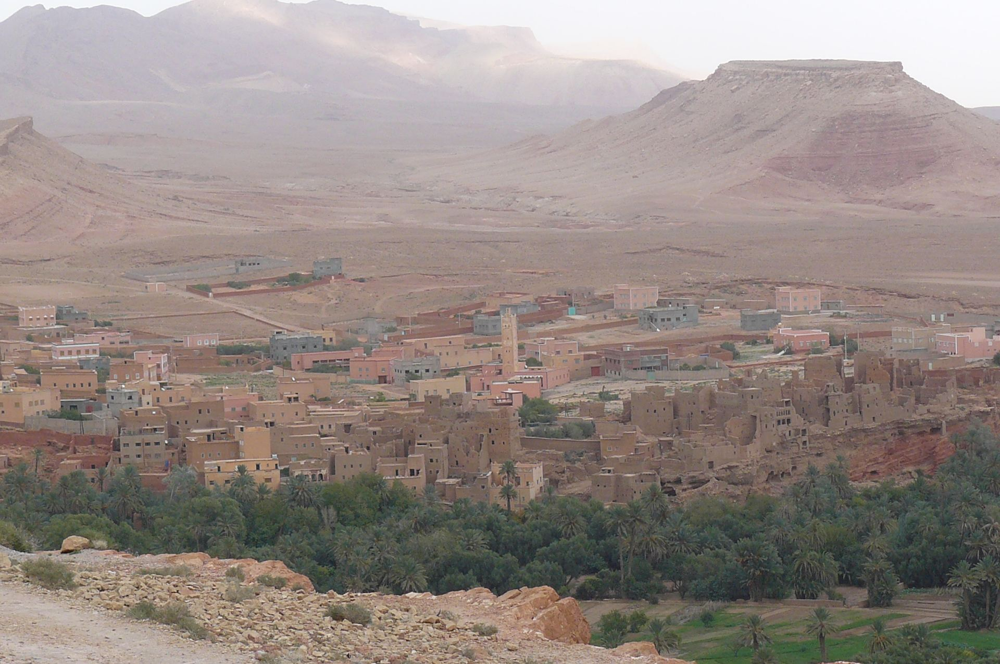
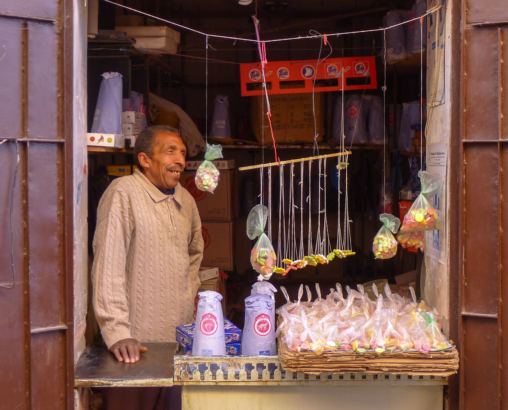
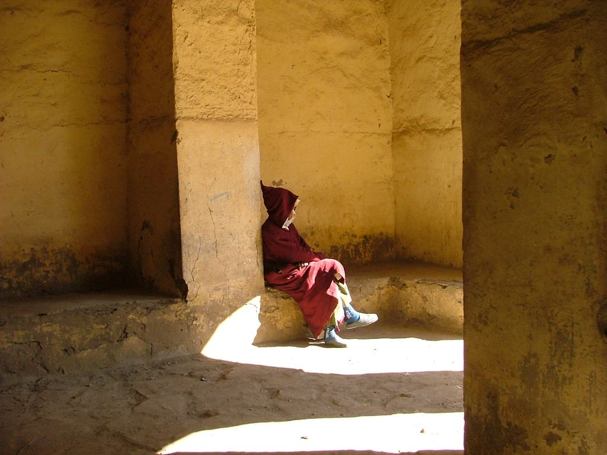
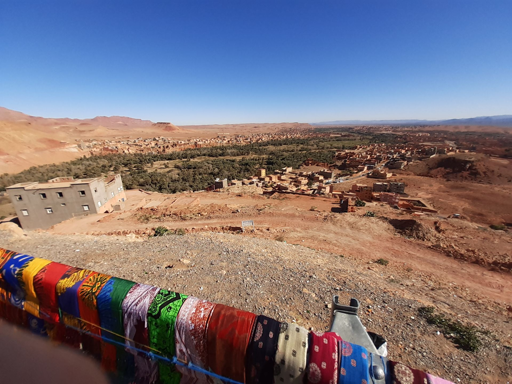

Explore
From dramatic gorges to ancient kasbahs, Tineghir offers unforgettable experiences for every traveler.

A spectacular canyon with 300-meter walls — walk the paved gorge, meet local vendors, or climb. Go early for soft light and fewer crowds.
📍 Tinghir · 15 km from town

A lush oasis stretching along the Todra River with thousands of date palms and traditional villages.
📍 Todra River · in town

A historic mud-brick kasbah on the hill — walk the exterior grounds for Berber architecture and panoramic views over Tinghir and the palm grove. Interior entry is restricted.
📍 City center

Handcrafted carpets, silver jewelry, and spices — daily stalls in the medina plus the big weekly souk outside the center. Go early, agree prices with a smile.
📍 Medina quarter · in town

Wander through the old medina with its narrow alleys, traditional Berber architecture, and lively local atmosphere.
📍 Old town

Hillside ksour up Tinghir's Todra Valley, where Berber families farm terraced plots between river and cliff.
📍 Tinghir · half-day